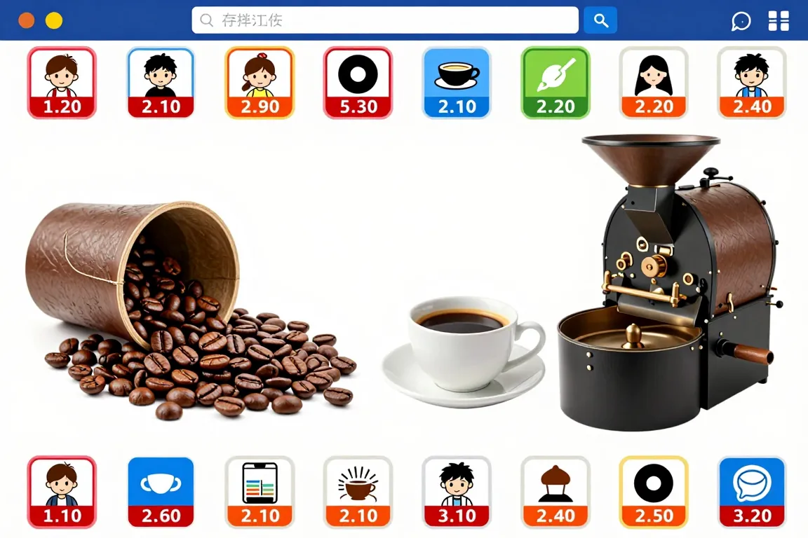

internet · 1999–now · also: Information-dense web, Portal style, Japanese portal design
Dense pages with many links, small type, bright accent colours, banners, ranking lists and tight grids. It grew from portals such as Yahoo! JAPAN and Rakuten and makes a page rich in choice.

Core thesis
Density is hospitality: show all the options at once, so the visitor never has to search.
Design principles
Pack 6 to 12 content blocks above the fold, each with a title row of 28px to 32px and 5 to 10 links beneath.
Set text at 12px to 14px with a leading of 1.5 to 1.7; keep headings at 14px to 18px and bold.
Use a tight grid with 8px gutters and block padding of 8px to 12px; borders of 1px in light grey separate blocks.
Mark categories with bright accent colours (red #E60012, orange, blue #0A58CA) in 3px to 4px header bars.
Show ranking numbers (1 to 10), price, discount badge and star ratings in small bright elements of 12px to 16px.
Add 3 or more banners of 300px to 728px width in rows, and a sticky bar for search and cart of 48px to 56px height.
Keep a clear text-first path: every block has a text link, and images are small thumbnails of 64px to 120px.